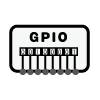

センサ・タイミング・アクションを選択して下さい
センサ
タイミング
アクション
温度センサ
湿度センサ
気圧センサ
GPS(位置情報)
GPS(移動情報)
角度センサ
バッテリレベル
ディジタル入力
アナログ入力
周期指定
時刻指定
時間帯指定
トリガ指定
Bluetooth送信
ON/OFF制御

GPIO出力
キャンセル
登録
アナログ入力設定
アナログPIN:
1
2
3
4
5
6
ディジタル入力設定
ディジタルPIN:
1
2
3
4
5
6
周期設定
周期:
時間毎
分毎
秒毎
開始時刻:
終了時刻:
時刻指定
動作時刻:
時間帯指定
開始時刻:
終了時刻:
トリガ指定
トリガ判定周期:
時間毎
分毎
秒毎
トリガ条件:
または
かつ
が
℃
より大きい
以上
以下
より小さい
条件を満たした状態が
時間
分
秒
継続すればトリガ条件成立とみなす
条件不成立となった場合にトリガを取り消す
トリガ条件の成立が継続している場合に
時間毎
分毎
秒毎
に繰り返す
Bluetooth送信設定
送信データ:
IoTジョブ制御設定
ジョブ:
IoT job #1
IoT job #2
IoT job #3
ON/OFF:
ON
OFF
GPIO制御設定
PIN番号:
1
2
3
出力モード:
ディジタル
アナログ
出力値:
LOW
HIGH
一定周期でHIGH/LOWを繰り返す
HIGH/LOWの周期:
msec
一定時間経過すると出力を停止する
停止までの時間:
msec
キャンセル
OK